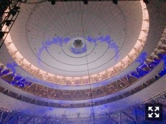

春服が可愛くて可愛くて仕方がないですっ！
みなさまこんにちは！
乃木坂46の
梅澤美波です！
すみません(；；)
４日間無事終了致しました！
会場にお越しくださった皆様、
ご覧下さった皆様、
遠くから応援して下さった皆様、
ありがとうございました！！
4日間１７７曲という
かなりハードな挑戦の中、
たくさんのスタッフさんが
私たちのためにステージを用意して下さり
毎日笑顔で迎えてくださり
本当に感謝でいっぱいです、、
ありがとうございました(；；)！
1stシングルから、
乃木坂の歴史を楽曲と映像と共に
振り返りながら過ごせたあの空間は
とても特別なものでした。
沢山いました。
それぞれが色々な想いを抱えながら
３期生は17thシングルから
参加させて頂いていたので、
卒業された先輩方のポジションを
務めさせて頂くことが多くありました。
その楽曲ごとに
たくさんの方の想いが詰まっていて、
ファンだった時期が私にもあったから
それはすごく理解しているつもりでしたが、
重々承知の上、
今の私に出来る精一杯の力で
パフォーマンスさせて頂きました
本当に素敵な楽曲ばかりだし
普段あまり披露できないような曲も
全曲披露だからこそパフォーマンスできた楽曲も沢山あったかと思います。
まだまだ力不足ですが
任せて頂いたからには
大切に歌い継いでいきたいと思いました。
今回は私が務めさせて頂いたポジションも
今後変わってくることもあるかと思います！
色んな形で、素敵な楽曲を言葉を、
乃木坂を好きでいてくれてる方にも
これから好きになってくださる方にも
届けていきたいと思います。
そのポジションに見合う
パフォーマンスが出来るよう、
もっともっと精進して参ります！
ありがとうございました！
パフォーマンスする西野さんの姿を
最後を一緒のステージに立てて
本当に幸せでした。
しっかり目に焼き付けました！
最後まで笑顔の西野さんが
本当にキラキラしてて輝いてて
私もアイドルを終える時
こんな最後が迎えられるように頑張ろうと思う瞬間でもありました。
7年間、本当にお疲れ様でした！
参加させて頂いた曲について
全部に触れていきたい所ですが
長くなりすぎてしまうので
心に閉まっておきます。
ももさん
初めて着れた衣装も沢山ありました！
全てが可愛くて憧れで、、
素敵な衣装を身にまとって
パフォーマンスできて幸せでした
衣装のパワーはすごい！！
カメラロール見返したら
全く写真撮ってなくて、、
バタバタしていたとはいえ
ちょっと後悔しています(；；)
自分の足りない部分も弱さも
向き合い改めて見つけることも出来ました。
そして先輩方や同期や4期生から
たくさんの刺激を受けました
改めて乃木坂46が大好きだなあと
感じる４日間でした！
たくさんの応援、
ありがとうございました！

とっても広いステージ、
当たり前ではない環境に
本当に感謝でいっぱいです。
京セラドームには
今年の夏の全国ツアーでまた帰ってきます！
ドームツアーが決定しましたので
また、皆様とお会い出来るのを
楽しみにしています！
色々お知らせやら告知やら
全然追いつけていませんが、、
随時メールには送ります！
そしてまた更新します！
さて！
明日は全国握手会が
幕張メッセにて開催されます！
22ndシングル帰り道は遠回りしたくなる
初の全国握手会です！
ぜひお越しください！
寒いかと思います、
たっている時間もかなり多いかと思います、
大変かと思いますが
9レーンにてお待ちしております、
ぜひ遊びに来てみてください！
たくさんお話しましょ〜︎︎︎︎✌︎
まってます！
おやすみなさい
Original：https://www.nogizaka46.com/s/n46/diary/detail/49427?ima=4946&cd=MEMBER